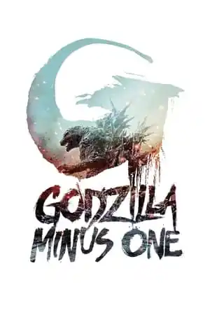

Godzilla Minus One (2023)
Movie Godzilla Minus One (2023) Cerita Film Godzilla Minus One sangat menarik dan menginspirasi, jangan lewatkan keseruan Godzilla Minus One Sub Indo.
Sinopsis Film
Di Jepang pascaperang, Godzilla membawa kehancuran baru ke wilayah yang sudah hangus. Tanpa adanya intervensi militer atau bantuan pemerintah, para penyintas harus bersatu menghadapi keputusasaan dan melawan kengerian yang tak henti-hentinya.